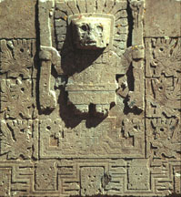

bajo relieve (o bajorrelieve)

Técnica de escultura (low relief o bas-relief) que consiste en tallar una superficie plana para que las formas esculpidas resalten del plano. Típicamente forman parte de un muro o de una columna. En el bajo relieve (al contrario del alto relieve) estas formas no resaltan mucho del plano. Arriba, el “Dios de los Bastones” en la Puerta del Sol en Tiwanaku, un ejemplo de escultura en bajo relieve.